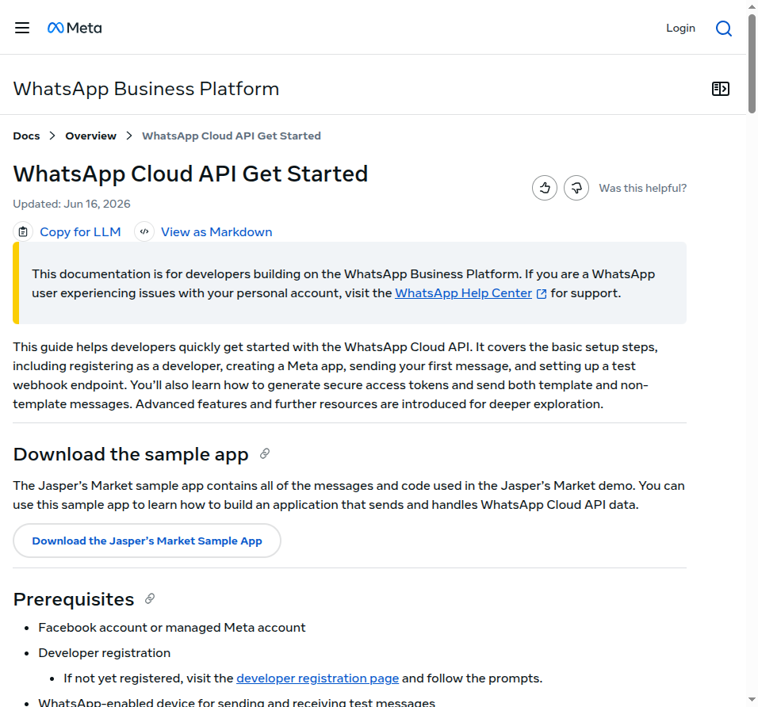
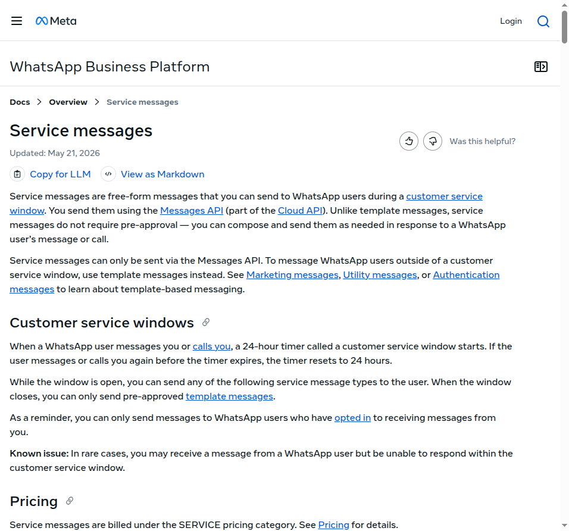
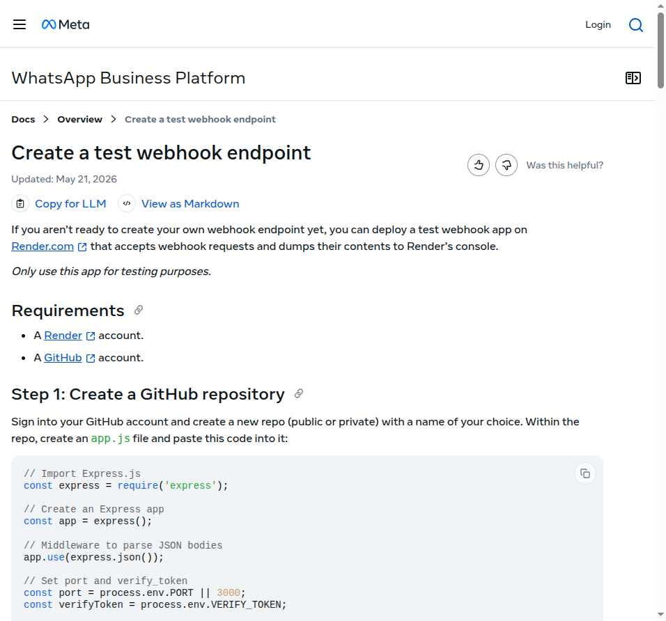
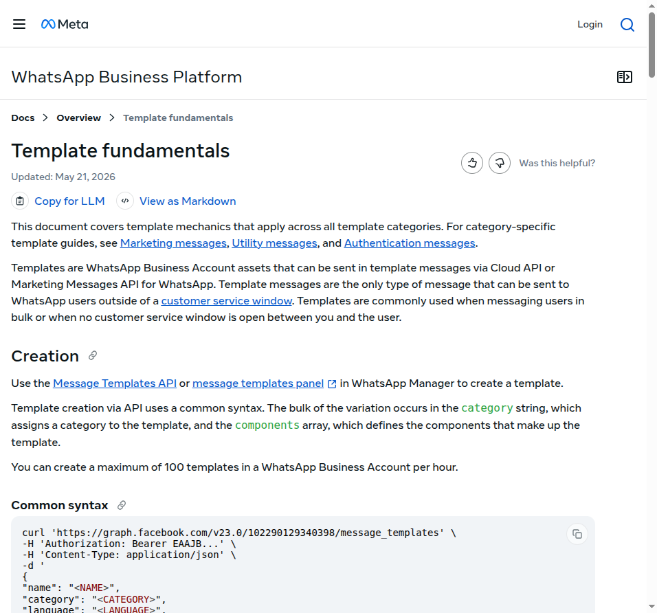
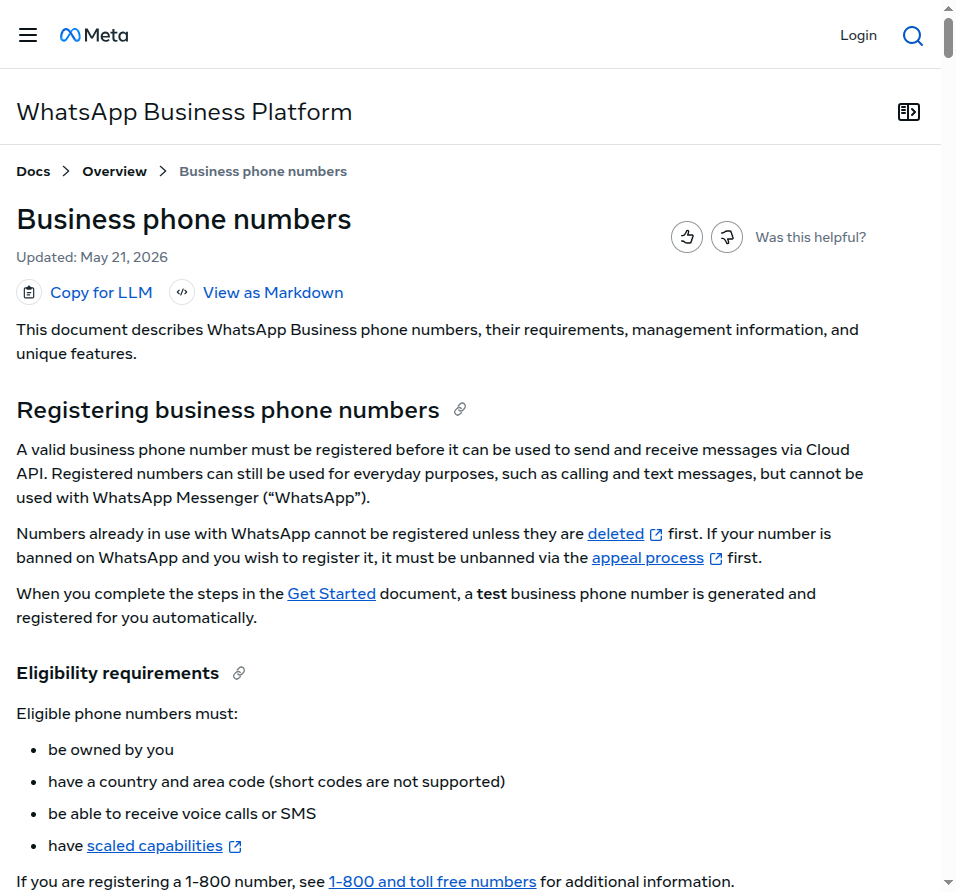
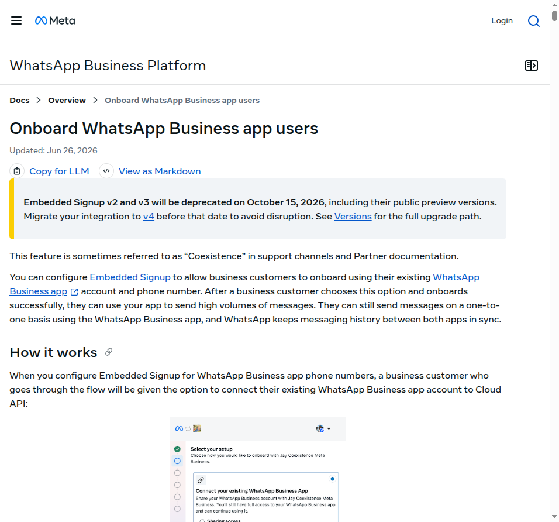

Mapa mental da integração
ClienteWhatsApp no celular
WhatsApp Cloud APIinfra da Meta
Seu backendNode, Python, etc.
🔐 Autenticação
Seu backend chama a Graph API com um access token. Em produção, use token de system user e guarde-o como segredo.
📤 Saída
Mensagens saem pelo endpoint /{PHONE_NUMBER_ID}/messages.
📥 Entrada
Mensagens e status chegam no seu endpoint HTTPS via webhooks.
Pré-requisitos
Você precisa
Conceitos que vão aparecer
WABA WhatsApp Business Account
PHONE_NUMBER_ID ID técnico do número usado na API
ACCESS TOKEN credencial do backend
WEBHOOK endpoint para eventos de entrada/status
Criar o App Meta com o caso de uso WhatsApp

Sequência visual
- Create App
- Nome + email
- Use case do WhatsApp
- Escolher/criar Business Portfolio
- Confirmar e criar
- Abrir Quickstart → Start using the API
API Setup: conecte a WABA e salve os IDs
WABA ID
Identifica a conta WhatsApp Business. Salve-o para operações administrativas e templates.
Phone Number ID
Identifica o número na Cloud API. É usado no endpoint de mensagens.
Test number
No onboarding inicial, a Meta fornece um número de teste para você validar o fluxo antes do número real.
GRAPH_API_VERSION=vXX.X WHATSAPP_WABA_ID=... WHATSAPP_PHONE_NUMBER_ID=... WHATSAPP_ACCESS_TOKEN=... WHATSAPP_VERIFY_TOKEN=... META_APP_SECRET=...
Do token temporário ao token de produção
Fluxo oficial
- Business Settings → System users
- Criar system user
- Assign Assets → seu app → Full control
- Assign Assets → WABA → Manage WhatsApp Business accounts
- Generate token
Permissões citadas no Get Started
business_management
whatsapp_business_messaging
whatsapp_business_management
Enviar a primeira mensagem

curl "https://graph.facebook.com/${GRAPH_API_VERSION}/${WHATSAPP_PHONE_NUMBER_ID}/messages" \
-H "Authorization: Bearer ${WHATSAPP_ACCESS_TOKEN}" \
-H "Content-Type: application/json" \
-d '{
"messaging_product": "whatsapp",
"recipient_type": "individual",
"to": "+55SEUNUMERO",
"type": "text",
"text": {
"body": "Olá! Mensagem enviada pela Cloud API."
}
}'Webhook: receber mensagens e status

app.get("/webhook", (req, res) => {
const mode = req.query["hub.mode"];
const token = req.query["hub.verify_token"];
const challenge = req.query["hub.challenge"];
if (mode === "subscribe" &&
token === process.env.WHATSAPP_VERIFY_TOKEN) {
return res.status(200).send(challenge);
}
return res.sendStatus(403);
});import crypto from "node:crypto";
function validMetaSignature(rawBody, signature) {
const expected = "sha256=" + crypto
.createHmac("sha256", process.env.META_APP_SECRET)
.update(rawBody)
.digest("hex");
return crypto.timingSafeEqual(
Buffer.from(expected),
Buffer.from(signature || "")
);
}A regra que muda tudo: janela de 24 horas
🟢 Dentro da janela
Você pode enviar service messages livres: texto, mídia, contatos, listas, flows e outros tipos suportados.
🔒 Fora da janela
Você só pode iniciar/retomar a conversa usando template previamente aprovado.
Templates: mensagens aprovadas para fora da janela

Nome
Até 512 caracteres; minúsculas, números e underscore. O mesmo nome pode existir em idiomas diferentes.
Variáveis
Podem ser nomeadas, como {{first_name}}, ou posicionais, como {{1}}.
Status
Só templates APPROVED podem ser enviados. Mudanças chegam por message_template_status_update.
curl "https://graph.facebook.com/${GRAPH_API_VERSION}/${WHATSAPP_PHONE_NUMBER_ID}/messages" \
-H "Authorization: Bearer ${WHATSAPP_ACCESS_TOKEN}" \
-H "Content-Type: application/json" \
-d '{
"messaging_product": "whatsapp",
"to": "+55SEUNUMERO",
"type": "template",
"template": {
"name": "seu_template_aprovado",
"language": { "code": "pt_BR" }
}
}'Limites e qualidade que valem conhecer
A documentação consultada informa até 100 criações de template por hora. WABAs de portfolio não verificado têm limite menor de templates, enquanto portfolios verificados podem ter capacidade maior sob condições. Qualidade baixa pode levar a pausa ou desativação.
Levar um número real para produção

Requisitos importantes
- Número válido capaz de receber verificação
- Status connected para enviar/receber pela API
- Display name
- PIN de verificação em duas etapas obrigatório no registro
Teste → produção
O Get Started gera um número de teste automaticamente. Para o número comercial, use App Dashboard / Business Suite / WhatsApp Manager e complete o registro Cloud API conforme a documentação do seu fluxo.
Checklist de produção
Avançado: Embedded Signup e coexistência

Coexistência Business App + Cloud API
A Meta documenta um fluxo em que o mesmo número pode continuar no WhatsApp Business app e também usar Cloud API, com histórico sincronizado em cenários suportados.
Restrições específicas
No fluxo de coexistência documentado, há throughput fixo de 20 mps e uma janela operacional para sincronização após onboarding. Trate isso como arquitetura avançada, não como requisito do primeiro MVP.
Debug rápido
Recebi HTTP 200, mas a mensagem não chegou
200/aceite da API não prova entrega. Procure o messages webhook de status e o WhatsApp Message ID.
Texto funciona às vezes e às vezes falha
Cheque se a customer service window de 24h ainda está aberta. Fora dela, use template aprovado.
Webhook não recebe nada
Confirme Callback URL pública HTTPS, Verify Token, assinatura do campo messages e logs do servidor. No test webhook oficial, a Meta orienta usar o botão Test no painel.
Template não envia
Verifique status APPROVED, idioma, nome exato, parâmetros e qualidade. Templates pausados/desativados não podem ser enviados.
Número adicionado mas API não envia
Verifique se o número foi realmente registrado para Cloud API e se o status está connected.